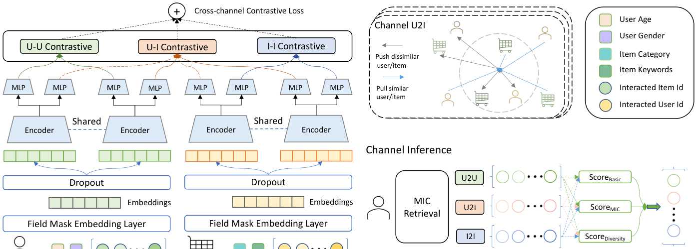

MIC: Model-agnostic Integrated Cross-channel Recommenders (模型无关的集成跨通道推荐器)
- 会议/期刊: CIKM 2022
- 作者与机构: Yujie Lu, Ping Nie, Shengyu Zhang, Ming Zhao, Ruobing Xie, William Wang, Yi Ren（UCSB / 浙江大学 / 腾讯）
- 推荐链路定位: 召回（matching stage）
- 研究方向: 协同过滤与双塔召回 / 自监督对比学习
- 论文原文: https://arxiv.org/abs/2110.11570v2
- 开源代码: 暂未开源（原文仅使用 Faiss 作为向量检索库：facebookresearch/faiss）
TL;DR (1分钟核心速览)
工业召回普遍并行跑 U2I、U2U、I2I 三路通道，但每路各自训练、线上靠配额（quota）硬拼，导致跨通道互信息被浪费、精度与多样性呈"跷跷板"。本文提出 MIC：以单一可替换 encoder 统一承载三通道表征，用字段掩码/Embedding Dropout 扰动 + kNN/k-means++ 采样构造正负例，施加 U-U、I-I 通道内与 U-I 通道间三重对比损失，再把三路候选按"基础分 + 计数软归一 + 类别多样性"统一打分。作为插件接入 DNN/Gru4Rec/ComiRec，在 Amazon Book、Taobao、Movielens、Steam 四库上 Recall@50 最高相对提升 10.90%，Amazon Book 上 Hit Rate@50 提升 18.51%；Tencent News 线上 A/B（各约百万用户）EPV 占比达 25%，播放完成率 +3.51%。
Background & Motivation (背景与核心矛盾)
- 主流范式: 工业两阶段系统中，召回层并行部署 U2I（向量检索）、U2U（相似用户历史）、I2I（相似物品）多路通道，各路独立建模后按配额混合；学术界则以单通道序列/多兴趣模型（YoutubeDNN、Gru4Rec、ComiRec）为主。
- 前人局限: ① 各通道只从用户-物品交互的局部信息出发，无法共享 U2U/I2I 中隐含的协同信号，跨通道相关路径（U2U2I、U2I2I）被割裂；② 线上配额混合是"事后拼接"，无法在训练期联合优化，精度与多样性长期此消彼长。
- 核心洞察 (Key Insight): 同一套表征空间其实可以同时服务三通道——只要用对比学习把"语义近的对拉近、远的推远"，就能让 U2I 的对齐性（alignment）与 U2U/I2I 的均匀性（uniformity）同步改善；作者用 Alignment/Uniformity 可视化验证了这一点。
- 本文切入点: 不做通道专属结构，而是做一个与 encoder 解耦的跨通道对比聚合模块，即插即用于任意召回模型。
Method (核心方法设计)
1. 整体框架 (Overall Architecture)
输入为实例三元组 \((X_u, F_u, F_v)\)（用户交互序列、用户侧字段、目标物品字段）。先经扰动挖掘模块生成两个视图：字段级随机掩码（用户 ID/性别/年龄/交互 item ID；物品 ID/关键词/交互 user ID）与嵌入层 Dropout；同时在表征空间用 kNN 检索正样本、k-means++ 跨簇采样硬负样本。随后 encoder（可替换）输出\(\vec{e}_u=f(X_u,F_u)\)、\(\vec{e}_v=g(F_v)\)，进入跨通道对比模块计算 U-U、I-I、U-I 三路损失并联合 BPR 式基础损失训练。推理时建立 user/item/interaction 三个 Datastore，分别检索\(K_1\)（U2I）、\(K_2\)（U2U）、\(K_3\)（I2I）候选，用统一打分函数融合后取 Top-\(N\)。
flowchart TD
A["输入: 交互序列 + 用户/物品字段"] --> B["多级扰动: Field Mask + Embedding Dropout"]
B --> C["可替换 Encoder (DNN/Gru4Rec/ComiRec)"]
C --> D["kNN 正例挖掘 + k-means++ 硬负例"]
D --> E["跨通道对比损失: L_uu + L_vv + L_uv"]
E --> F["三通道检索: U2I / U2U / I2I"]
F --> G["统一打分 ScoreBasic + λ_mic·ScoreMIC + λ_div·ScoreDiv"]
2. 关键设计拆解 (Key Designs)
- 跨通道对比估计（Inter/Intra-channel Contrastive）：痛点是对比学习多用于单通道自监督，通道间语义鸿沟未打通。本文在同一 mini-batch 内对正例对 \((u,v)\)施加双向 InfoNCE，其中\(\mathrm{sim}(u,v)=\mathbf{u}^{\top}\mathbf{v}/(\|\mathbf{u}\|\|\mathbf{v}\|)\)：
同式构造 \(\mathcal{L}_{uu}\)、\(\mathcal{L}_{vv}\)。直觉：U-I 对比负责"对齐"，U-U/I-I 对比负责让表征各向异性更均匀（uniform），三者共同把三通道的信息流打通，故无需通道专属结构。
-
多级扰动 + 检索式样本挖掘（Perturbation & Mining）：仅靠 dropout 视图多样性不足、且难以保证语义一致。本文双管齐下：字段级掩码 + 嵌入层 dropout 生成伪视图；再用 kNN 把锚点近邻扩为正例集、用 k-means++ 跨簇用户作硬负例，正负例数量（近邻数、簇数、掩码比例）均可在线调节，保证对业务快速变化的时效性。
-
训练目标与统一打分推理：总损失 \(\mathcal{L}=0.7\,\mathcal{L}_{basic}+0.3(\mathcal{L}_{uv}+\mathcal{L}_{vv}+\mathcal{L}_{uu})\)，三通道等权、温度\(\tau=0.1\)。推理时三通道候选合并为\(V_C=\{(v_i,s_i)\}\)（\(s_i\)为被重复召回的计数），并做计数软归一\(Score_{MIC}(v_i)=\exp(s_i)/\sum_{j\in V_C}\exp(s_j)\)，最终\(Score=Score_{Basic}+\lambda_{mic}Score_{MIC}+\lambda_{div}Score_{Div}\)，其中\(Score_{Div}\) 按物品类别惩罚同类聚集。负采样用 in-batch 负例 + 硬负例，无额外采样器；推理开销为 Faiss 检索 + Redis 查相似用户/物品 + 聚合三步，各 <10ms，线上小时级更新模型、秒级更新行为。
Experimental Setup & Evaluation Protocol (实验设置与评估协议)
- 数据集与预处理: 主文未给出完整统计表（置于附录 Table 4），可确认四库规模量级与场景如下：
| 数据集 | #Users | #Items | #Interactions | 稀疏度/密度 | 特征/场景说明 |
|---|---|---|---|---|---|
| Amazon Book | 未报告 | 未报告 | 未报告 | 未报告 | 图书评论，序列 + 物品关键词，强稀疏 |
| Taobao | 未报告 | 未报告 | 未报告 | 未报告 | 电商行为，用户/物品属性丰富 |
| Movielens | 未报告 | 未报告 | 未报告 | 未报告 | 电影评分，稠密、长尾较轻 |
| Steam | 未报告 | 未报告 | 未报告 | 未报告 | 游戏购买/游玩，极稀疏、短序列 |
- 数据划分与防穿越 (Splitting Strategy): 划分方式主文未明示，仅说明训练中跟踪 Development split 的 Recall/NDCG/HR 并按 Recall 最优早停，可推断为按时间序列的留出式划分（类 Leave-Last-Out），但缺乏显式声明。
- 排名评测协议 (Ranking Protocol): 采用按用户平均（per-user average）的 Recall@N、NDCG@N、Hit Rate@N，\(N\in\{20,50\}\)；未明确是全库 Full-Ranking 还是负采样 Sampled Ranking（这直接影响数值可比性，属评估漏洞）。
- 对比基线与超参设置: 基线为 YoutubeDNN、Gru4Rec、ComiRec 三类召回模型，以及各自的 \(X+\text{MIC}\)变体；Embedding 维度\(d=128\)、batch 1024、学习率 1e-3、dropout 0.2、\(\tau=0.1\)、\(\lambda=0.7\)，TensorFlow + 单卡 P40；未做显著性检验。
Key Experimental Results (实验关键数据)
1. 主实验对比 (Main Results)
各模型 @50 指标（数值为百分制，加粗为最优；Improv. 为 \(X+\text{MIC}\) 相对同 backbone 的提升）：
| 数据集 | 指标@50 | YoutubeDNN | Gru4Rec | ComiRec | ComiRec+MIC | Improv. |
|---|---|---|---|---|---|---|
| Amazon Book | Recall | 8.885 | 8.908 | 10.257 | 11.550 | +10.90% |
| NDCG | 6.594 | 6.915 | 7.217 | 7.889 | +9.31% | |
| HR | 18.709 | 18.949 | 19.231 | 22.790 | +18.51% | |
| Taobao | Recall | 5.075 | 6.118 | 7.115 | 7.861 | +10.48% |
| NDCG | 14.263 | 16.084 | 20.635 | 22.509 | +9.08% | |
| HR | 39.310 | 42.114 | 48.094 | 51.607 | +7.30% | |
| Movielens | Recall | 23.028 | 24.447 | 25.043 | 25.927 | +3.53% |
| NDCG | 38.756 | 39.888 | 41.099 | 42.109 | +2.46% | |
| HR | 87.245 | 89.705 | 90.138 | 91.391 | +1.39% | |
| Steam | Recall | 3.671 | 4.432 | 5.021 | 5.123 | +2.03% |
| NDCG | 5.077 | 4.997 | 6.230 | 6.671 | +7.08% | |
| HR | 12.031 | 11.089 | 13.149 | 14.388 | +9.42% |
线上 A/B（Tencent News 视频推荐，2021.10.01–10.15，实验/对照各约 100 万用户）：EPV 占比 25%（第二名召回模型约 8%），平均播放完成率 +3.51%，平均观看时长 +1.26%，人均观看视频数 +1.85%。
2. 消融实验 (Ablation Study)
Amazon Book @50（backbone = ComiRec）：
| 变体 | Recall | NDCG | HR | Diversity |
|---|---|---|---|---|
| Full Model | 11.554 | 7.889 | 22.790 | 49.511 |
| w/o U-U 对比 | 10.556 | 7.689 | 21.132 | 44.021 |
| w/o U-I 对比 | 10.347 | 6.462 | 21.273 | 42.483 |
| w/o I-I 对比 | 11.096 | 7.089 | 22.668 | 46.796 |
| w/o 扰动模块 | 8.415 | 5.346 | 16.590 | 34.188 |
| w/o kNN 挖掘 | 10.176 | 6.098 | 20.727 | 41.983 |
| 推理 w/o U2U 通道 | 11.148 | 7.688 | 22.076 | 45.478 |
| 推理 w/o U2I 通道 | 11.484 | 7.825 | 22.571 | 45.603 |
| 推理 w/o I2I 通道 | 11.316 | 7.758 | 22.443 | 41.709 |
3. 关键实验发现 (Key Findings)
- 扰动模块是"命门"而非可选项：去掉扰动后 Recall@50 从 11.554 崩至 8.415（−27.2%），跌幅远超去掉任一对比通道分支（−3.9% ~ −10.4%），说明多视图增广决定了对比信号的可用性，通道间聚合只是在此基础上的二次增益。
- U-I 对比主导精度、I-I 对比主导多样性：去掉 U-I 使 NDCG 从 7.889 掉到 6.462（−18.1%），是精度损失最大项；而推理阶段去掉 I2I 通道使 Diversity 从 49.511 降到 41.709（−15.8%），却几乎不损 Recall，说明通道级多样性主要由 I2I 路径承担，可按业务目标单独调 \(\lambda_{div}\)。
- MIC 打破了精度-多样性跷跷板：Amazon Book 上 ComiRec-SA 沿召回-多样性曲线滑动时 Recall 上限约 10.3，而 MIC 增强版在多样性 50+ 区间仍拿到 11.5+，整体曲线外移；稀疏集（Steam）与稠密集（Movielens）增益差异（+2.03% vs +10.90% Recall）说明协同信号越稀疏、跨通道互补价值越大。
Highlights & Limitations (亮点、对比与审稿批判)
- 与代表作对比 (vs. Prior Work): 相比 ComiRec 的多兴趣单通道建模，MIC 不改 encoder 而改"信息流"；相比 YoutubeDNN/Gru4Rec 的纯 U2I 目标，MIC 显式引入 U2U/I2I 作为对比监督信号；相比工业常用的配额式多路混合（事后融合），MIC 把融合前移到训练与打分层（\(\lambda_{mic}\)、\(\lambda_{div}\) 可调），是首个在单一模型中同时启用三通道的工作。
- 可迁移亮点: ① "计数软归一"\(Score_{MIC}=\exp(s_i)/\sum\exp(s_j)\) 用召回重复次数刻画多通道共识度，可零成本迁移到任意多路召回融合；② 用 k-means++ 跨簇采样硬负例替代随机负采样，对稀疏场景鲁棒。
- 审稿级局限批判: ① 评估协议未声明 Full-Ranking 还是负采样排序、未做显著性检验、四个数据集的统计与预处理（是否 5-core 过滤）缺失，跨论文可比性弱；② 线上为小时级更新模型 + 三通道各需 Faiss/Redis 多跳查询，参数量与延迟随 \(M_1,M_2,M_3\)呈乘性增长，且\(\lambda_{mic},\lambda_{div}\) 依赖 Grid Search，冷启动/新物品下的稳定性未验证。
Rating (四维评分)
- 方法创新性 (Novelty): ⭐⭐⭐⭐ （把跨通道对比学习做成 model-agnostic 插件并用 Alignment/Uniformity 给出机理解释，思路干净，但对比学习本身在 2022 年已非新范式）
- 评估协议与实验扎实度 (Protocol & Experiments): ⭐⭐⭐ （三基线 × 四数据集 + 线上 A/B 很有说服力，但未声明全库排序协议、缺数据统计与显著性检验，削弱可比性）
- 写作与数学规范度 (Clarity & Rigor): ⭐⭐⭐⭐ （三通道损失与统一打分公式清晰、超参与线上配置交代到位；第 2 节公式排版稍乱、部分符号重复定义）
- 工业落地与复现价值 (Industrial & Practical Value): ⭐⭐⭐⭐⭐ （腾讯新闻百万级用户线上验证，插件式改造迁移成本极低，Faiss+Redis 三步各 <10ms 具备直接复刻条件）